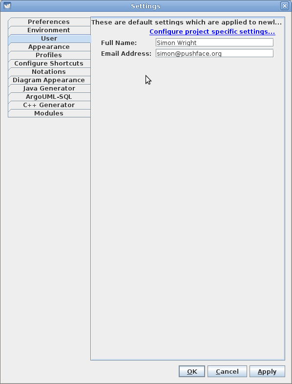
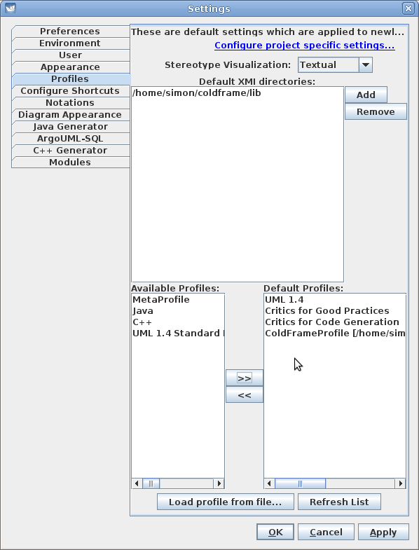
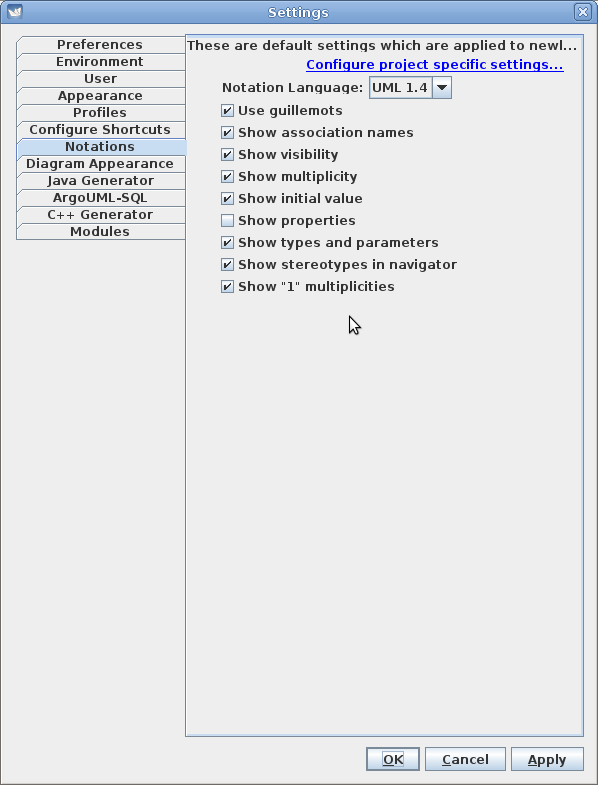
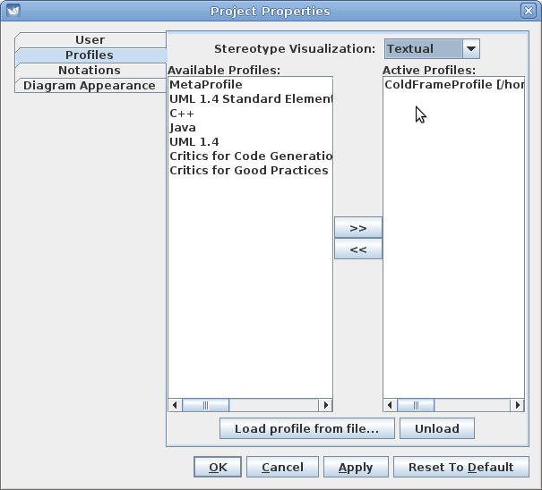

You can download two different flavours of Java; SE and OpenJDK. For reasons, at any rate on macOS, the default settings option is invisible under OpenJDK, so it's probably best to stick with SE. This is the 'Download Java" button here.
You can find copies of the old releases here.
For macOS, you might have expected that ArgoUML-0.35.1.app.tar.gz would have been the thing, but (at any rate on Ventura) it won't unpack into ~/tmp, and even if unpacked onto an external disk macOS claims it's damaged and won't open it.
Instead, download ArgoUML-0.35.1.tar.gz and unpack to a convenient place, then
java -jar /where/ever/argouml-0.35.1/argouml.jar
(this will result in a lot of logging output).
On Linux and (probably) Windows, you can set up ColdFrame-specific and ColdFrame-recommended defaults in the Edit/Settings menu. On macOS, use Main/Preferences.
You can set your name and contact details in the User tab:

In the Profiles tab, you need to tell ArgoUML where to find ColdFrame's profile (the top half of the screenshot). You'll probably want something more like /where/ever/cf-20121225/lib. Then, in the lower half, click on Refresh List to include ColdFrameProfile.xmi in the Available Profiles and then on the >> to include it in the Default Profiles.

Adjust the Notations settings to suit.

In the Diagram Appearance tab, you may like to show node names in a bold font.
It's best if you remove all but ColdFrameProfile from the Active Profiles list.
